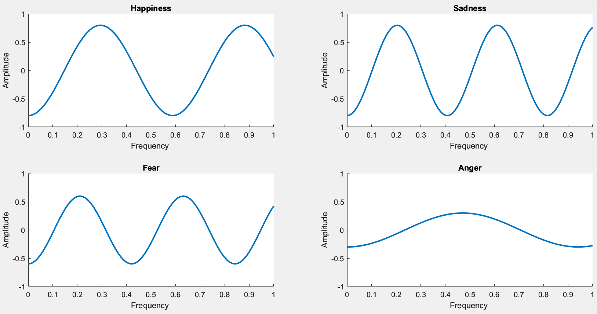

Dataset - Emotional Brain Waves
This EEG brain waves dataset was collected from 21 people and involved basic emotional states: happiness and sadness, each one with 1201 and 1311, respectively.
DATASET - Emotional Brain Waves .A deep analysis was performed to study the features of wavelets in brain waves for each emotional state. Measurements of amplitude (A) and frequency (f) were taken as a base to do the analysis. The Fourier Transform method was used as a mathematical function to transform the signal from the time domain to the frequency domain. The purpose of applying the Fourier method was to study not only the amplitude, but also the frequencies of wavelets
The Matlab programming platform was used to analyze the EEG raw data. We built a program to gather, clean, and process the raw data. 21 files of participants' brain waves were read by the program for each emotional state. Raw data passed through a process of cleaning. This process involved changing null or empty values by zero. Furthermore, we performed a normalization process to change to scale data from 0 to 1, because the raw data contained up to 8 digits. A scale of 1 means the highest amplitude in a wavelet, whereas 0 means the lowest.
.After this pre-processing, the Fourier Transform method was used to transform the waveform into its spectral components \cite{murugappan2013human} \cite{nie2011eeg}. The whole purpose of using the Fourier Transform is to study the brain wave in amplitude-frequency instead of amplitude-time distribution, thereby allowing efficient access of localized information about the signal. Furthermore, through the Fourier Transform, the waveform is changed into an alternative representation, characterized by sine and cosines.
Taking into account a theoretical background in signals, the Beta and Gamma frequency bands are more related to emotions. A high level of Gamma wave denotes the happiness states; Beta brain waves have a relationship with emotional arousal states. Therefore, our analysis goes on studying the frequency and amplitude of Gamma wave.
We employed a function to measure the wave amplitude considering the height of the wave. Likewise, the wave frequency was measured. The measurement of brain waves was made per participant. After getting all the brain wave measures, it was plotted to identify emotional state features. At first glance, it was not easy to identify amplitude and frequency characteristics to differentiate emotional states in brain waves. First, we used functions like maximum, minimum, median, average, and standard deviation to detect emotional brain wave features, but these results were not effective. Therefore, we decided to use the average function to calculate the mean of amplitude and frequency of the 21 participants for the four emotional states. Additionally, we used the frequency average values to calculate the wavelength using the formula "\textit{wavelength=1/frequency}". Then, we identified that the average values had a particular characteristic for each emotional state. From the amplitude and frequency averages, we employed reverse engineering to rebuild the signal using the sinusoid/sine wave; it is a sine trigonometric function. This sinusoidal/sine function consists of a single frequency with a constant amplitude. Then, we use the average frequency and amplitude as parameters to the sinusoidal/sine function. After applying the function \textit{sin()} and using the \textit{plot()} function to draw the waves in Matlab, the result was the plot distribution of the waves. The wave rebuilding process was applied to the four emotional states. At first sight, it was not possible to identify the features of each emotional state. Thereby, we decided to use filters to emphasize the amplitude and frequency average of each emotional wave. As a consequence, we obtained 4 feature patterns of brain waves, one for each emotional state, as is illustrated in Figures \ref{fig:wavesfeastures}.A, \ref{fig:wavesfeastures}.B, \ref{fig:wavesfeastures}.C, and \ref{fig:wavesfeastures}.D.
This EEG brain waves dataset was collected from 21 people and involved basic emotional states: happiness and sadness, each one with 1201 and 1311, respectively.
Happiness features
for the happiness emotional state, the wave had the highest amplitude 0.98 and lowest frequency 17. The wavelet was the largest like in Figure \ref{fig:wavesfeastures}.A).
Sadness features
in the case of the sadness emotion wave, it was the highest in amplitude 0.98 and highest in frequency 24.05. The wave feature is a bit thin compared to the happiness wave(Figure \ref{fig:wavesfeastures}.B).
Fear features
the fear emotion wave was a bit lower in amplitude 0.97 and a bit higher in frequency 22.62. Compared to the happiness and sadness emotion waves, this one had features of shorter wavelets (Figure \ref{fig:wavesfeastures}.C).
Anger features
the anger emotion wave had the lowest amplitude (0.93) and lower frequency (20.24). The anger wave feature was shorter and almost flat compared to the other emotional wave patterns (Figure \ref{fig:wavesfeastures}.D).